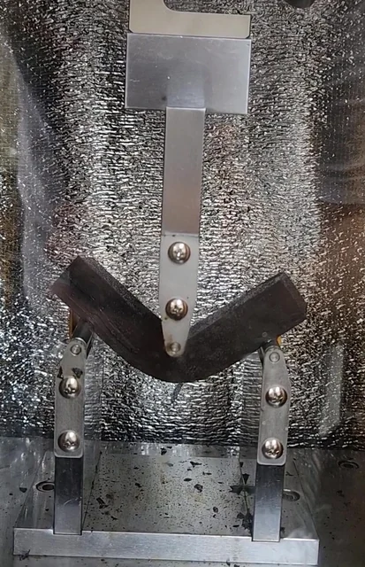
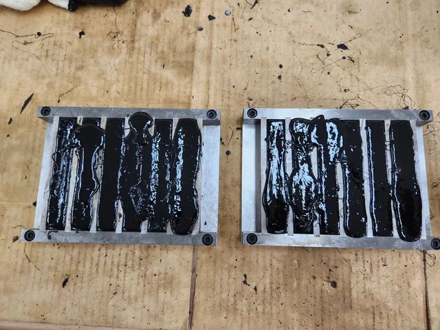

Fig. 8 · Load over time
Measured load and fitted curves for binder A. The vertical axis shows load in newtons on a logarithmic scale.
2023–2024 · Specimen preparation · Testing and analysis support
Is −20°C an appropriate test condition for high-viscosity asphalt binders?
This study examined the low-temperature flexural behavior of high-viscosity asphalt binders and the suitability of the −20°C test condition. Laboratory observations were examined alongside statistical analysis.

Binder beam bending under a central loading nose.
The Japanese-origin method, subsequently refined by the Korean Asphalt Institute, uses a beam specimen, a central loading point, and two supports. I connected specimen preparation and testing support with checks of the laboratory records and analysis datasets.

Binder-filled molds during beam specimen preparation.
Measured load and fitted curves for binder A. The vertical axis shows load in newtons on a logarithmic scale.
Time-dependent p-values comparing modeled values between temperature pairs. Values below 0.05 indicate evidence of a difference at that time.
This work connected specimen preparation, testing support, statistical analysis, and research documentation. The study was published in 2023, with me as second and corresponding author.
Related publication · DOI ↗